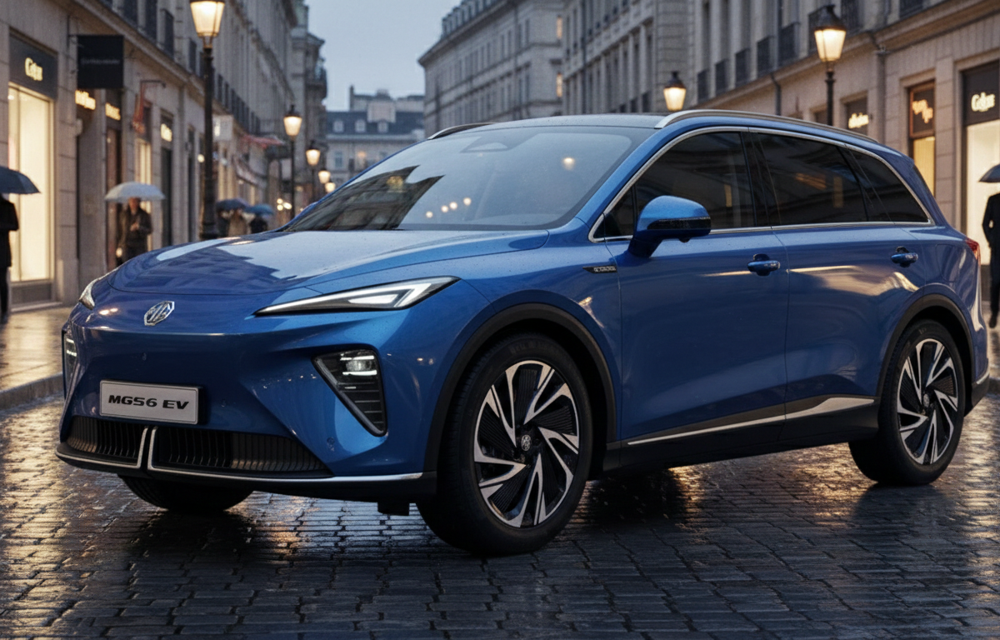
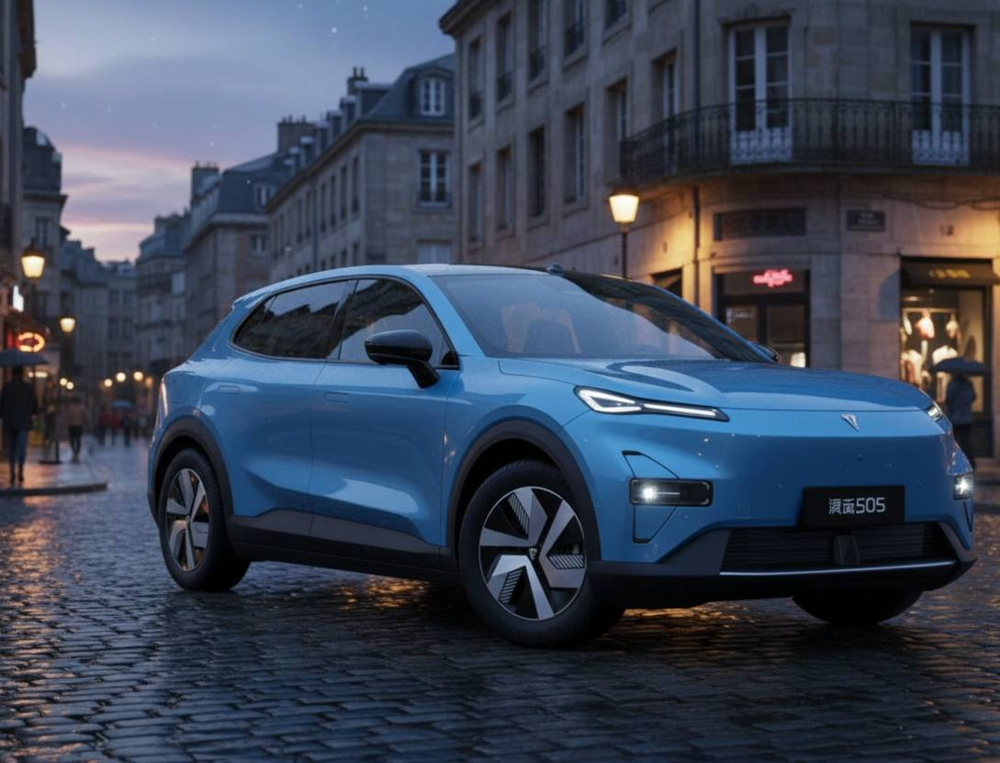
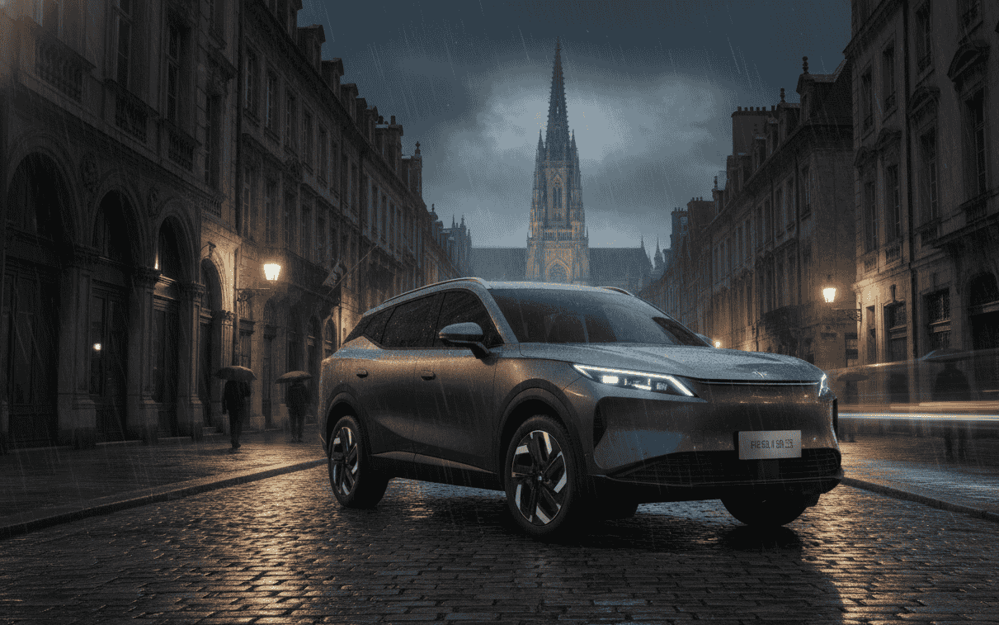
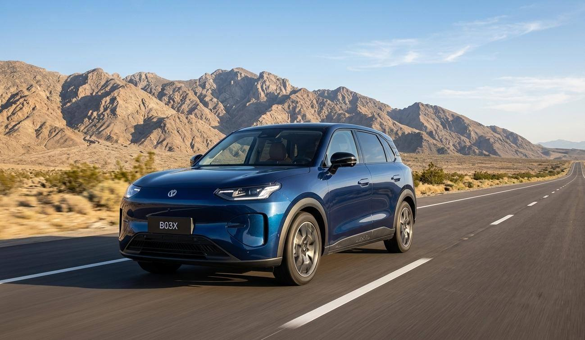

Llevo meses viendo cómo cambian los datos de matriculaciones mes a mes, y la sensación es clara: lo que hasta hace poco parecía una moda pasajera se ha convertido en una parte estructural del mercado español. Ya no hablamos de una marca china aislada intentando abrirse hueco. Hablamos de 21 marcas de origen chino vendiendo turismos en España durante el primer semestre de 2026, según los datos que recoge Europa Press, aunque no todas con volúmenes relevantes todavía.
En este artículo quiero responder a la pregunta que más me hacéis últimamente: ¿qué marcas chinas de coches eléctricos se pueden comprar hoy en España y qué modelo ofrece cada una? Voy a intentar ser lo más concreto posible, con datos y fuentes verificables, porque este es un tema que cambia constantemente y prefiero que os quedéis con la foto real del mercado, no con suposiciones.
¿Cuántas marcas chinas de coches eléctricos hay en España?
Ya no hablamos de un puñado de marcas. En el mercado español conviven actualmente varios perfiles distintos: marcas chinas ya consolidadas y con red comercial amplia, marcas que acaban de aterrizar y todavía están construyendo su presencia, grupos chinos que operan con varias marcas a la vez (como Geely con Geely, Zeekr y Lynk & Co, o Chery con Omoda y Jaecoo), y marcas que combinan eléctricos con híbridos enchufables en su gama.
Como decía antes, Europa Press contabilizaba 21 marcas de origen chino vendiendo turismos en España durante el primer semestre de 2026, con MG, BYD y el conjunto Omoda/Jaecoo concentrando cerca del 90% de esas matriculaciones. El resto se reparte entre marcas con volúmenes todavía pequeños, pero que van creciendo mes a mes.
Principales marcas chinas de coches eléctricos en España
Para no perdernos, he preparado una tabla con las marcas chinas más relevantes que ya venden eléctricos en España, el grupo al que pertenecen y algunos de sus modelos. La lista está respaldada, entre otras fuentes, por la guía de mercado de ¿Qué coche me compro?, que mantiene un seguimiento actualizado de las marcas chinas presentes en España.
| Marca | Grupo | Algunos eléctricos |
|---|---|---|
| BYD | BYD | Dolphin Surf, Atto 2, Atto 3 EVO, Seal, Seal U, Sealion 7, Tang |
| MG | SAIC | MG4, MG4 Urban, MGS5 EV, MGS6 EV, Cyberster |
| Leapmotor | Leapmotor / Stellantis | T03, B10, C10, B05 |
| Omoda | Chery | Omoda 5 EV |
| Jaecoo | Chery | Jaecoo 5 EV |
| Deepal | Changan | S05, S07 |
| XPeng | XPeng | G6, G9, P7+ |
| Zeekr | Geely | 7X, 7GT, 001, X |
| Geely | Geely | E5, E2 |
| Dongfeng | Dongfeng | Box, Vigo |
| GWM / ORA | Great Wall Motor | ORA 5 |
| Lynk & Co | Geely | 02 |
| Voyah | Dongfeng | Free, Dream |
| Hongqi | FAW | eHS9 |
No pretendo que esta tabla sea absolutamente exhaustiva: el mercado cambia cada pocos meses y prefiero ir actualizándola a medida que aparecen nuevas marcas o modelos, en lugar de intentar meterlo todo de golpe.
BYD: la marca china que más está creciendo
Si hay una marca china que merece un apartado propio en este artículo, esa es BYD. Los datos son contundentes: hasta agosto de 2026, BYD llegó a acumular 11.943 eléctricos matriculados en España, superando a Tesla, que se quedó en 9.733, según los datos de Ideauto recogidos por Cinco Días.
Su gama eléctrica en España es ya bastante amplia. Según la información que mantiene actualizada la propia BYD en su web española, actualmente incluye modelos como el Dolphin Surf, el Dolphin, el Atto 2, el Atto 3 EVO, el Seal, el Seal U, el Sealion 7 y el Tang.
Parte de esta expansión se explica por algo que la propia marca destaca: BYD controla buena parte de su cadena tecnológica, incluidas sus propias baterías Blade de química LFP, lo que le da bastante margen de maniobra en precio y producción.
MG: una marca china con una implantación diferente
Aquí hay un matiz que me parece importante aclarar porque mucha gente no lo sabe: MG es originalmente una marca británica, pero actualmente pertenece al grupo chino SAIC. Es, por tanto, una marca china en cuanto a propiedad y estrategia industrial, aunque su nombre y su historia sean británicos.

Su gama eléctrica en España ya es considerable. El MG4 Urban EV parte oficialmente de 25.490€ de tarifa según la información publicada por MG, con baterías de 43 y 54 kWh disponibles. En algunas campañas comerciales, y aplicando ayudas, MG ha llegado a anunciar precios desde 16.790€ para este mismo modelo, según su propio comunicado de prensa, así que conviene siempre revisar la oferta vigente antes de comparar precios entre marcas.
Por otro lado, el MGS6 EV monta una batería de 77 kWh y ofrece, según las versiones, autonomías de 530 y 485 km WLTP, de acuerdo con los datos técnicos publicados por MG Motor Europe.
Las nuevas marcas chinas que están llegando a España
Lo que más rápido cambia en este mercado es precisamente esto: la lista de marcas nuevas. Zeekr, Deepal, Geely como marca independiente (más allá de Lynk & Co o Zeekr) y otras firmas del grupo GAC están reforzando su presencia en España durante 2026.



El País Motor recogía en julio de 2026 diferentes lanzamientos previstos para España durante la segunda mitad del año, incluyendo novedades de Zeekr, Changan, GAC, Leapmotor, BYD y Geely. Es una sección que pienso ir actualizando a medida que estas marcas confirmen fechas y precios concretos, en lugar de crear un artículo nuevo cada vez que aparezca una marca.
¿Por qué están llegando tantas marcas chinas?
No creo que haya una única explicación, sino una combinación de factores que se han ido reforzando entre sí durante los últimos años:
- Una inversión muy fuerte de China en la producción de baterías durante la última década.
- La integración vertical de fabricantes como BYD, que controlan buena parte de su propia cadena tecnológica.
- Una oferta de modelos muy amplia, cubriendo prácticamente todos los segmentos y presupuestos.
- Precios competitivos en determinados segmentos, especialmente en el segmento B y C.
- Una renovación de producto mucho más rápida que la habitual en marcas europeas tradicionales.
- La entrada progresiva de grandes grupos como Chery, Geely, SAIC, Changan o Dongfeng, cada uno con varias marcas bajo su paraguas.
¿Son más baratos los coches eléctricos chinos?
Esta es la pregunta que más me hacéis, y prefiero no simplificarla con un "sí" rotundo porque no sería del todo honesto. Hay modelos chinos con precios de entrada muy agresivos, como el propio MG4 Urban EV, pero también hay marcas chinas de posicionamiento premium, como Zeekr, cuyos precios se acercan a los de marcas europeas equivalentes en prestaciones.

Lo que sí puedo deciros es que la forma correcta de comparar no es agrupar "coches chinos" como si fueran un bloque homogéneo, sino comparar modelo a modelo: precio, capacidad de batería, autonomía WLTP, potencia de carga en corriente continua, dimensiones y condiciones de garantía. Por ejemplo, entre modelos del segmento B como el MG4 Urban, el BYD Dolphin Surf, el Omoda 5 EV o el Leapmotor B10 hay diferencias reales de precio y equipamiento que conviene revisar en el configurador oficial de cada marca antes de comparar, ya que estas cifras cambian con frecuencia según campañas comerciales y ayudas vigentes en cada momento.
Si te interesa un ejemplo reciente de esta nueva generación de eléctricos chinos, puedes leer nuestro análisis del Leapmotor B03X, con 382 km de autonomía y carga en 16 minutos, uno de los modelos que mejor representa esta nueva ola de SUV eléctricos asequibles respaldados por acuerdos con grupos europeos, en este caso Stellantis.

¿Qué marcas chinas tienen más presencia en España?
Aquí conviene ser cuidadoso con los datos, porque una marca puede vender muchas unidades en total pero repartidas entre eléctricos e híbridos enchufables, y eso distorsiona la comparación si solo miramos matriculaciones totales.
Centrándonos en eléctricos puros (BEV), BYD ya tenía en julio de 2026 10.586 unidades matriculadas y una cuota del 14,3% del mercado BEV en España, según los datos publicados por la propia compañía. Junto con MG y el conjunto Omoda/Jaecoo, forman el trío que concentra la inmensa mayoría de las ventas de marcas chinas en nuestro país, tal y como reflejaba Europa Press para el conjunto del primer semestre de 2026.
¿Qué marcas chinas llegarán próximamente?
Esta es la sección que pienso mantener más viva dentro del artículo, porque el mercado se mueve deprisa. Con la información disponible hasta hoy, El País Motor apuntaba a nuevos lanzamientos en España durante la segunda mitad de 2026 de marcas como Zeekr, Changan (a través de Deepal), GAC, Leapmotor, BYD y Geely, ampliando todavía más un catálogo que ya es de los más amplios de toda Europa.
Iré actualizando este apartado según se vayan confirmando fechas de lanzamiento y precios oficiales para España, así que si vuelves a este artículo dentro de unos meses probablemente encuentres alguna marca nueva en esta lista.
Preguntas frecuentes sobre las marcas chinas de coches eléctricos en España
FAQ – Coches eléctricos chinos en España
🔹 ¿Cuántas marcas chinas de coches eléctricos venden en España?
Según datos de Europa Press, en el primer semestre de 2026 había 21 marcas de origen chino vendiendo turismos en España, aunque no todas con volúmenes elevados. En conjunto, sumaron 75.024 matriculaciones y un 12,3% de cuota del mercado español, concentrándose cerca del 90% de esas ventas en MG, BYD y el grupo Omoda/Jaecoo.
🔹 ¿Cuáles son las marcas chinas de coches eléctricos más vendidas en España?
MG, BYD y el conjunto Omoda/Jaecoo concentran aproximadamente el 90% de las matriculaciones de marcas chinas en España, según Europa Press. BYD, en concreto, llegó a superar a Tesla en matriculaciones hasta agosto de 2026, con 11.943 eléctricos frente a los 9.733 de Tesla, de acuerdo con datos de Ideauto recogidos por Cinco Días.
🔹 ¿Son más baratos los coches eléctricos chinos que los europeos?
No se puede generalizar. Algunos modelos, como el MG4 Urban EV, tienen un precio de acceso muy competitivo, pero otros modelos chinos, especialmente los de marcas premium como Zeekr, se sitúan en rangos de precio similares a los de marcas europeas equivalentes. Lo recomendable es comparar modelo a modelo: precio, batería, autonomía WLTP, potencia de carga y garantía, en lugar de asumir que todos los coches chinos son más baratos.
🔹 ¿Qué marcas chinas de coches eléctricos llegarán próximamente a España?
Según recogía El País Motor, durante la segunda mitad de 2026 se esperan nuevos lanzamientos en España de marcas como Zeekr, Changan/Deepal, GAC, Leapmotor, BYD y Geely, ampliando todavía más la oferta de eléctricos chinos disponible para el comprador español.
Conclusión
El mapa de las marcas chinas de coches eléctricos en España ya no es un fenómeno emergente: es una parte consolidada del mercado, con BYD superando a Tesla en matriculaciones, MG afianzada como una de las opciones más asequibles de acceso al eléctrico, y todo un grupo de marcas nuevas (Zeekr, Deepal, Geely, GAC) preparando su desembarco o reforzando el que ya han hecho.
Mi recomendación, como siempre, es la misma: no elijas un coche eléctrico solo por su origen, sea chino o europeo. Compara ficha técnica, precio real tras ayudas, red de servicio postventa y garantía. Este artículo lo iré actualizando a medida que aparezcan nuevas marcas o cambien los datos de matriculaciones, así que guárdalo como referencia.
Fuentes consultadas
- Europa Press — Las marcas chinas representaron el 12,3% de las ventas en el primer semestre con 75.024 matriculaciones
- Autonomía Coches Eléctricos — Matriculaciones por marca de coche eléctrico en España 2026
- ¿Qué coche me compro? — Todos los coches chinos del mercado en 2026
- Cinco Días / Ideauto — BYD destrona a Tesla en España hasta agosto de 2026
- BYD España — Gama de coches eléctricos
- BYD España — Plan Auto+: toda la gama BYD elegible con ayudas
- MG Motor Europe — Precio oficial del MG4 Urban EV
- MG Motor Europe — Ficha técnica del MGS6 EV
- El País Motor — Los coches chinos que llegarán a España en el segundo semestre de 2026